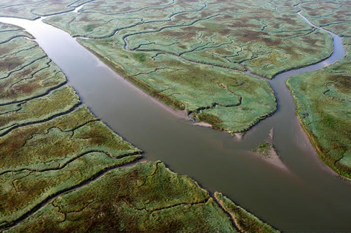

MARINE ECOSYSTEMS
 SENSITIVE
SENSITIVE
Beach & Coastal
Coastal Ecosystem
Transitional zones between land and sea that protect inland areas from waves and storms.
Wave protection, sand dunes, coastal biodiversity
 FRAGILE
FRAGILE
Coral Reefs
Shallow Marine Ecosystem
Highly diverse underwater ecosystems that support thousands of marine species.
Biodiversity hotspots, reef fish, coral structures
 FRAGILE
FRAGILE
Coral Lagoons
Sheltered Reef Zones
Shallow waters near reefs that serve as nurseries for marine organisms.
Calm waters, juvenile fish, coral protection
 PROTECTED
PROTECTED
Mangrove Forests
Coastal Wetlands
Mangroves prevent coastal erosion and act as nurseries for fish and crustaceans.
Storm barriers, root systems, fish nurseries
 FRAGILE
FRAGILE
Seagrass Beds
Shallow Coastal Waters
Underwater meadows that provide food and shelter for marine life.
Carbon storage, turtle feeding grounds
 DYNAMIC
DYNAMIC
Intertidal Zones
Tidal Shore Ecosystem
Areas exposed during low tide and submerged during high tide.
Tide pools, shellfish, wave exposure

SENSITIVEEstuaries
Brackish Ecosystem
Where freshwater meets seawater, creating nutrient-rich environments.
High nutrients, nurseries, food webs
 VAST
VAST
Open Ocean
Pelagic Zone
The largest marine ecosystem supporting migratory species and plankton.
Migration routes, plankton food chains
 EXTREME
EXTREME
Deep Sea
Aphotic Zone
A dark, high-pressure environment inhabited by uniquely adapted organisms.
Bioluminescence, extreme pressure